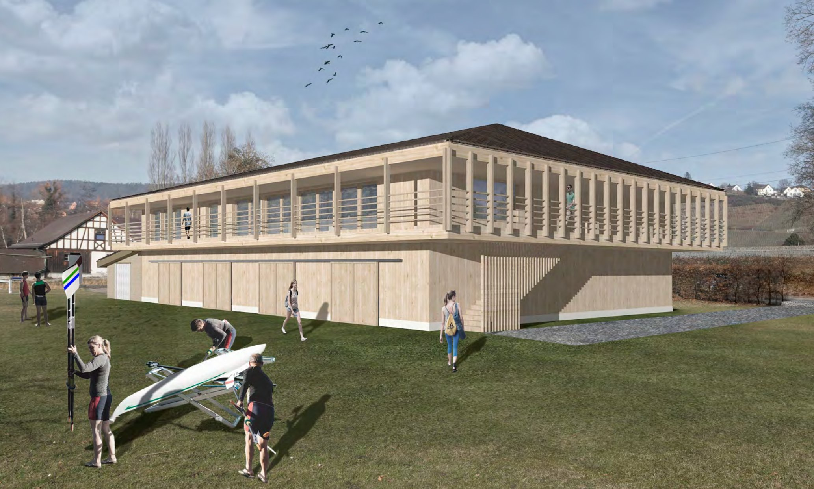

Rudern auf dem Zürichsee.
Breitensport, Leistungssport und Jugendförderung – seit über 100 Jahren. Komm vorbei, lern uns kennen und entdecke einen der schönsten Sportarten der Welt.
Der Seeclub Stäfa wurde 1917 gegründet und gehört zu den traditionsreichsten Ruderclubs am Zürichsee. Wir vereinen Breitensport, ambitionierten Leistungssport und engagierte Jugendförderung unter einem Dach.
Ob du das erste Mal in ein Boot steigst oder bereits an Regatten startest – bei uns findest du das passende Umfeld, erfahrene Trainerinnen und Trainer und eine Community, die den Sport und den See liebt.
Drei Wege ins Boot – wähle deinen.
Der direkte Weg ins Boot. Lerne in wenigen Wochen die Grundlagen des Ruderns.
Mehr erfahren →Für Jugendliche ab ca. 12 Jahren. Spass, Teamgeist und sportliche Entwicklung.
Mehr erfahren →Du hast bereits Rudererfahrung? Bewirb dich direkt für einen Quereinstieg.
Mehr erfahren →Wir bauen ein neues Zuhause für unseren Sport. Modern, nachhaltig und offen für die nächsten Generationen am Zürichsee.
Projekt entdecken →